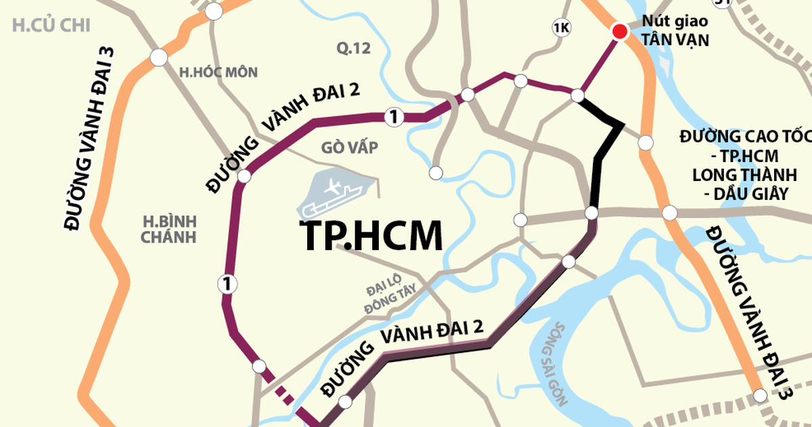

Dự án thành phần 3 thuộc tuyến Vành đai 3 TP.HCM đi qua địa bàn Đồng Nai đang được đẩy nhanh thi công nhằm đảm bảo mục tiêu đưa công trình vào khai thác theo kế hoạch. Đây là một trong những đoạn tuyến quan trọng giúp tăng cường kết nối giao thông giữa TP.HCM và khu vực phía Đông Nam Bộ.
Theo báo cáo mới nhất từ cơ quan quản lý dự án, đoạn tuyến có chiều dài 11,26 km được đầu tư giai đoạn đầu với quy mô 4 làn xe cao tốc. Đến nay, tổng giá trị thực hiện toàn dự án đạt khoảng 71,9% khối lượng hợp đồng.
Tuy nhiên, tiến độ giữa các gói thầu vẫn có sự chênh lệch đáng kể. Trong đó, gói thầu số 26, đoạn từ đầu tuyến đến nút giao đường 25C dài khoảng 2,2 km, hiện mới đạt 58,5% khối lượng thi công, thấp hơn khoảng 10% so với kế hoạch đề ra.
Bên cạnh đó, gói thầu số 29 cũng đang chậm tiến độ khi khối lượng thực hiện đạt 74,7%, thấp hơn khoảng 4,6% so với mục tiêu. Ngược lại, gói thầu số 32 từ nút giao đường 25B đến cuối tuyến đang có kết quả tích cực khi đạt 77,9% khối lượng, vượt hơn 10% so với kế hoạch.
Trước tình hình trên, chủ đầu tư và các đơn vị liên quan đã triển khai nhiều giải pháp nhằm tăng tốc thi công. Đối với gói thầu số 26, nhà thầu chính đã thống nhất bổ sung thêm đơn vị thi công phụ để tăng nguồn lực, đẩy nhanh tiến độ các hạng mục còn lại và hạn chế nguy cơ ảnh hưởng đến tiến độ chung của toàn dự án.
Theo kế hoạch, các hạng mục còn lại của những gói thầu đang triển khai sẽ tiếp tục được hoàn thiện trong thời gian tới. Mục tiêu là đưa toàn bộ đoạn tuyến vào khai thác đồng bộ, góp phần giảm áp lực giao thông trên các tuyến quốc lộ hiện hữu và nâng cao năng lực kết nối giữa TP.HCM với Đồng Nai cũng như các địa phương trong vùng kinh tế trọng điểm phía Nam.
Từ góc độ thị trường bất động sản, tiến độ thi công Vành đai 3 luôn được giới đầu tư quan tâm bởi đây là dự án hạ tầng có khả năng tạo động lực phát triển cho nhiều khu vực cửa ngõ. Khi hoàn thành, tuyến đường sẽ rút ngắn thời gian di chuyển, tăng tính kết nối logistics và thúc đẩy sự hình thành các khu đô thị, khu công nghiệp và trung tâm dịch vụ mới dọc hành lang giao thông.
Mặc dù một số gói thầu vẫn còn chậm so với kế hoạch, việc các cơ quan chức năng chủ động bổ sung nguồn lực và tăng cường giám sát tiến độ được kỳ vọng sẽ giúp dự án bám sát mục tiêu hoàn thành trong giai đoạn tới.
Nguồn: Tuổi Trẻ